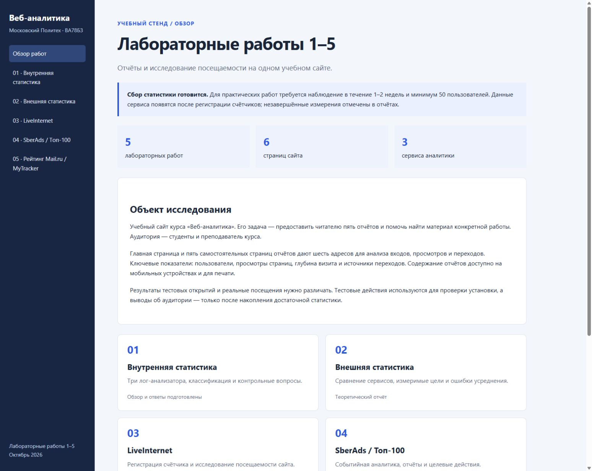

Московский политехнический университет
Дисциплина «Веб-аналитика» · Лабораторная работа №4 · Москва, 2026
Цель работы
Исследовать статистику SberAds / Топ-100, подготовить события и конверсии для учебного сайта, определить состав двух собственных отчётов и правила анализа посещаемости.
Практика ещё не завершена. Счётчик 7752692 создан 07.10.2026 и установлен на шести страницах. Заявка в Топ-100 проходит модерацию. В кабинете сохранены две цели, две конверсии и два собственных отчёта. Получение просмотров и обоих контрольных действий подтверждено 07.10.2026. Здесь приведены настройки, техническая проверка и ответы по лекции. Итоговые измерения требуют 1–2 недель и не менее 50 реальных пользователей.
1. Сайт и модель данных
Объект — сайт лабораторных работ: обзор плюс пять отчётов, шесть страниц с разными URL. Событийная модель позволяет описывать просмотры, техническую активность и отдельные действия. Показатели рассчитываются из событий; событие становится целевым после определения условия его достижения.

Основные группы кабинета по лекции: Дашборд, Конструктор, Конверсии, Отчёты, Медиаотчёты и Рейтинг. События разных классов обслуживают разные задачи: базовые base, технические tech, блоки ub, медиа media, собственные cv, электронная коммерция ec; также предусмотрены crash, email и server. Этот стенд использует страницы и полезные действия, а коммерческие события ему не нужны.
2. Настройка счётчика
- Войти в Статистику SberAds и создать счётчик для полного адреса проекта GitHub Pages. Название: «Веб-аналитика: лабораторные работы».
- Включить участие в Топ-100, выбрать тематику «Образование» и ключевые слова «веб-аналитика, лабораторные, статистика». Вариант значка и цвет согласовать с тёмно-синим оформлением, расположить внизу каждой страницы.
- Дополнительные домены не добавлять без реальных зеркал. Ограничить сбор адресом проекта настолько, насколько позволяет кабинет: на домене GitHub Pages могут находиться другие проекты.
- Для аналитики блоков выбрать имя data-атрибута и разметить меню/действия в соответствии с документацией. Учёт hash не нужен обычным HTML-страницам. Передача user-id не нужна, поскольку на сайте нет собственной авторизации.
- Установить выданный код единожды в общий шаблон. Для этого сайта выбран ручной способ; альтернативы — CMS/HTML-блок и менеджер тегов.
- Проверить загрузку счётчика и появление данных в кабинете. В лекции предлагается фильтровать сетевые запросы по Kraken. Успешный запрос и запись в отчёте вместе подтверждают сбор.
Используется собственный счётчик 7752692. В кабинете сохранены тема «Образование / Учебно-методические материалы», ключевые слова и закрытая статистика рейтинга. Включены ограничение данных зарегистрированными доменами и аналитика блоков с data-analytics-block. Размечены навигация, кнопки действий и область каждого отчёта. Дополнительных доменов нет; hash и user-id выключены, так как сайт не использует маршрутизацию по hash и авторизацию читателей. Цвет официального виджета — 313efb. Изменение настроек, рейтинг, код и доступы управляются в меню счётчика; предоставлять чужим аккаунтам доступ для выполнения работы не требуется.
3. Два события и конверсии
| Событие | Действие | Условие и назначение |
|---|---|---|
printReport | Нажатие «Печать отчёта» | Собственное событие. Показывает запрос печатной версии, но не доказывает печать на принтере |
openSource | Переход по ссылке в списке источников | Собственное событие класса cv. Показывает интерес к первоисточнику |
В разделе «Целевые события» сохранены «Печать отчёта» и «Открытие источника»: класс «Собственные события», имя printReport / openSource соответственно. В «Конверсиях» созданы «Конверсия в печать отчёта» (27713) и «Конверсия в открытие источника» (27714). Знаменатель — все визиты. Обе цели и конверсии имеют личный доступ.
Коэффициент конверсии = число визитов с целевым действием / число визитов соответствующего сегмента × 100%. Несколько кликов в одном визите не должны автоматически становиться несколькими конвертировавшими визитами. Вызовы отправки подключены к реальным кнопке печати и ссылкам библиографии. После одного нажатия печати на странице работы 4 и одного перехода к официальному API из источников работы 5 кабинет показал по одному достижению. В единственном тестовом визите обе конверсии составили 100%. Это результат технической проверки, который не оценивает эффективность сайта и не заменяет выборку ≥50 пользователей.
4. Два отчёта конструктора
| Название | Строки / разрезы | Метрики | Аналитический вопрос |
|---|---|---|---|
| «Источники и полезные действия» | Источники переходов, Referer domain, название события | Визиты, посетители, количество событий; фильтр класса cv и имён printReport ИЛИ openSource | Какой источник приводит заинтересованных читателей? |
| «Отчёты и устройства» | URL страницы, тип устройства | Просмотры, посетители, визиты, глубина; фильтр URL адреса учебного проекта | Какие лабораторные читают и удобны ли они на телефоне? |
Оба отчёта находятся в «Моих отчётах». Для технической проверки выбран день 07.10.2026 и полный семпл 100%. В первом отчёте имена событий объединены условием ИЛИ; во втором URL ограничен шаблоном https://dimazikskyter.github.io/web-analytics-labs/*. Конверсии анализируются в отдельном разделе: количество событий в Конструкторе само по себе не является коэффициентом конверсии. При итоговом исследовании нужно установить фиксированные даты всего периода и раскрыть вложенные строки источника/события или страницы/устройства.
На дашборде сравниваются охват, просмотры, источники, популярные страницы, аудитория и события. В режиме текущей даты данные обновляются оперативно; за завершённый период следует использовать фиксированные даты. Группы отчётов: «Аудитория» — активность и характеристики; «Технологии» — устройства, браузеры, ОС; «Источники» — каналы переходов; «Содержание» — URL и заголовки; «Поведение» — блоки, события и параметры визита.
5. Измерения и выводы
Подтверждена только техническая проверка. Старт сбора — 07.10.2026. На 23:30 кабинет показал по одному достижению двух целей в одном тестовом визите. Нужно собрать 7–14 полных суток и ≥50 реальных пользователей за весь период, затем снять дашборд, пять групп отчётов, обе конверсии и два собственных отчёта. Одни и те же даты и фильтры обеспечат сопоставимость. Охват нельзя подтверждать суммой дневных уникальных.
По результатам описываются самые посещаемые страницы, источники заинтересованных читателей, устройства и доступные характеристики аудитории. Отдельно отмечаются неизвестные значения, тестовые визиты и небольшие сегменты. До накопления данных портрет аудитории и оценка эффективности целей не определены.
6. Контрольные вопросы
- Три определения веб-аналитики: сбор и анализ поведения для улучшения сайта; преобразование событий в показатели; проверка решений по данным.
- Этапы: регистрация → код → установка → проверка → накопление → отчёты → решения.
- Значок 88×31: отображаемые числа зависят от выбранного варианта; содержимое нужно сверять с генератором, а не переносить значения из примера.
- Размер значка: выбрать предлагаемый генератором размер, сохранив читаемость и официальный код. Самовольное изменение картинки не меняет правила сбора.
- Части кода: инициализация с ID проекта, загрузка библиотеки, отправка событий; видимый значок/резервный фрагмент зависят от генератора.
- Действия со счётчиком: получить код, изменить параметры и рейтинг, управлять доступами; удаление — отдельная операция.
- Участие в рейтинге: включить переключатель, заполнить название, тематику и ключевые слова, установить счётчик.
- Проверка: наличие кода, успешные сетевые запросы и поступление данных в кабинет.
- Доступ: настройки доступа по адресу зарегистрированного пользователя; права чтения и изменения различаются.
- Модель: события с параметрами, из которых строятся отчёты и конверсии.
- Типы событий: base, tech, crash, media, ub, ec, cv, email, server; часть автоматическая, часть требует настройки.
- Создание события: раздел целевых событий, название, условие, сохранение и проверка поступления.
- Цель: заранее определённое полезное действие, например запрос печатной версии.
- Конверсия: связать целевое событие с конверсией, затем оценивать достижения и долю при одинаковом периоде.
- Интерфейс: дашборд, конструктор, конверсии, тематические отчёты, медиа и рейтинг.
- Настройки отчёта: период, детализация, семпл, условия фильтрации, показатели и вид представления.
- Дашборд: панель ключевых показателей для быстрой оценки состояния сайта.
- Виджеты: охват, просмотры, источники, страницы, аудитория, формат, события и метки кампаний по лекции.
- Конструктор: средство выбора разрезов и метрик для собственного отчёта.
- Шаблоны: аудитория, технологии, источники, содержание и поведение.
- Настройки конструктора: числовые столбцы, параметры строк, таблица/график, фильтры и детализация.
- Где находятся новые отчёты: после сохранения — «Мои отчёты».
- Аудитория: таблицы и графики посещаемости, глубины, времени, географии, пола, возраста и интересов при доступности.
- Технологии: сравнение устройств, браузеров, ОС и разрешений; фильтрация и выбор показателей.
- Формат страницы: разделяет платформы/форматы, например web и inapp; не равен расширению HTML-файла.
- Группы источников: каналы, сайты, поиск, социальные сети, рекламные и рекомендательные переходы.
- Канал: категория происхождения трафика, например прямой, поиск или ссылка с сайта.
- Примеры: переход из поисковика; ссылка учебной группы; прямое открытие без переданного источника.
- Настройки источников: период, канал, источник, метки и другие условия; одинаковые фильтры для сравнения.
- Представление источников: таблица долей/чисел и график динамики; доли дополнять абсолютными значениями.
- Содержание: страницы, URL, заголовки и доступные параметры адресов.
- Поведение: нужна установка кода, а для блоков — включение функции и корректная data-разметка.
- Информация о визите: просмотры, длительность, глубина, события и доступные характеристики источника/устройства.
- Рейтинг: каталог сайтов и показатели популярности/позиции по выбранной тематике и периоду.
- Чем полезен рейтинг: даёт контекст сравнения сайтов, но позиция сама по себе не измеряет качество учебного материала.
Ответы описывают модель и интерфейс приложенной лекции; фактические названия и доступность полей проверяются после входа в текущий кабинет.
Вывод
Определены два полезных действия и два отчёта, которые связывают источники, содержание и результат посещения. Установка, обе цели, конверсии и два сохранённых отчёта проверены на контрольных действиях. Для завершения остаются период наблюдения, достаточная аудитория и итоговый анализ; тестовый визит не подтверждает выполнение этих требований.
Источники
- Лекция «Счётчик статистики Sber Ads» (требуется вход).
- Статистика SberAds.
- Официальная инструкция установки.
- Описание счётчика и этапов подключения, 15.05.2025.
- Официальный метод отправки собственных событий.
- Официальный виджет и цвет.
Дата обращения: 06–07.10.2026.